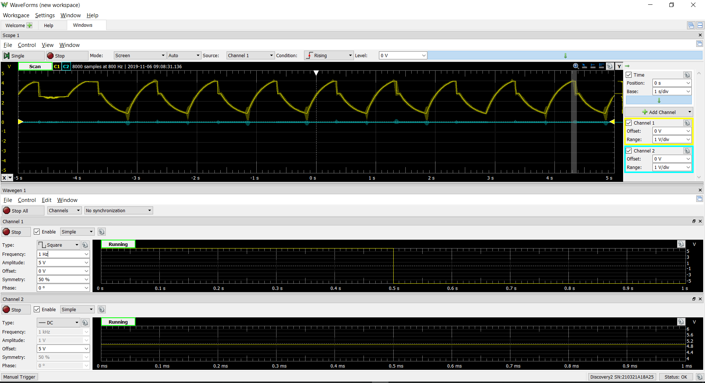

We have made an ADSR! We found the signal works as expected when we have a positive and negative voltage applied as the signal. We are using an Analog Discovery to generate and read the tones; however, when converting to the Arduino we will need to make a virtual ground to achieve “negative” voltages.
After discussing with Rowan, we have converted how we generate the audio tones to 555 timers. We found that these timers are easily configurable for the frequencies we need, and take up significantly less space than the previous VCO circuit we were considering. This is also not to mention the power necessity of only 5 V as opposed to a 32 V range. We found passing the threshold signal through an op-amp makes the signal sound more sinusoidal - whereas the output is a discrete on/off signal - which is a tone we find more appealing.
We put together the whole structure with the lasers and electrical system the night before and took a video for the sprint review. In the sprint, we were able to (mostly) meet our mvp and be able to play notes after the user input. After we presented our sprint review, we seemed to not have explained the overall system super well and had a few questions regarding that. We received some feedback on overall concerns about our project. One of the main topics was the size of the circuit we’re dealing with and fitting that into our system. Additionally, many were impressed by what we accomplished on the electrical side.
Kyle, our saviour, told us about how we can set where the voltage goes and pass through each laser individually and fast enough so that it looks like all of them are on. Stan also told us the lasers need a resistor in series and that we need to measure the current across the laser. Our integration included the 555 timers generating the signals, photodiodes to detect the laser, and mechanical keys and cylinders that will expose the laser when pressed. Therefore the result appeared similar to a piano that would output a tone when a key was pressed.
We have made the first revision of our PCB. This board includes the 555 timer circuitry to generate the oscillations, the ADSR circuit, and an STM32 microcontroller to post-process the audio signal.